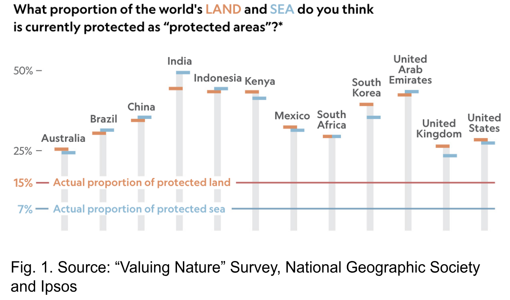

Asteroids Ended the Dinosaurs; Now It's Humans Ending Everything Else
originally published: 29 April 2025
tags: academic, sources, enviornmentalism, social justice
note: written for an English course
The world is facing a modern extinction crisis that is unlike any other that has been seen before. Biodiversity, the rich variety of life that sustains ecosystems and provides essential resources like fresh water, clean air, medicine, and food, is disappearing at an alarming rate. This extinction that is causing species to perish at a rate 1,000 to 10,000 times faster than normal is primarily due to one factor: human activity. Unlike the slow, natural processes of extinction in Earth's history, this modern crisis is fueled by overconsumption, environmental destruction, and exploitation. This rapid decline is not an inevitable consequence of nature; it is a direct result of deliberate choices. If humans are the driving force behind this crisis, then humans must also be the force that reverses it. Preserving biodiversity is not just about saving animals; it is about safeguarding the future of our planet and every generation to come.
Mass extinctions have occurred repeatedly in Earth's history, with five taking place over the past 540 million years. Scientists define mass extinctions as the loss of over 75% of species within a short geological period (Barnosky et al). To analyze if the planet is in its sixth extinction, scientists compared long-term fossil background rates, the natural pace at which species disappear over millions of years, with current extinction rates. Background rates are slow; they suggest that about 1-2 species per million typically go extinct each year. In contrast, modern extinction rates have far exceeded this pace. Each year, up to 24 mammal species per million go extinct, with an overall maximum short-term rate of 693 species per million a year. Although these rates surpass natural expectations, they have not yet reached mass extinction levels. However, many major species groups show 20-43% of their populations are now threatened. If all threatened species go extinct, the Earth could hit mass extinction levels within only a few centuries. Concluding that this trend cannot be explained by natural processes alone, scientists turned to the most likely source of disruption and found one unmistakable culprit: human interaction.
Human activity has altered nearly every corner of the natural world, and the consequences are dire. Habitat destruction, overexploitation of resources, and climate disruption are driving countless species to the brink of extinction much faster than they naturally should. Within the next 50 years, these animals will lose 30-50% of their present habitat due to interaction of humans (Teare). The main cause of this destruction is the expansion of cities, agriculture, and industry. As these natural areas shrink, animals lose access to food, breeding grounds, and shelter, furthering these animals towards extinction. Expanding cities require expanding resources through exploiting the natural world. This widespread destruction is not just a series of accidents; it is the result of deeply rooted systems that place human progress above all else (Gray and Milne). And yet, this pattern of destruction is not only permitted but often enabled by those in power. Lawmakers, especially those in the United States, have repeatedly passed legislation that prioritizes economic gain over environmental protection. The Endangered Species Act (ESA) was created in 1973 to protect at-risk species and their habitats, but recent political actions have weakened it. Between 2016 and 2018, nearly 150 attempts were made to undercut the ESA (Cho). These efforts reflect a long-standing tension between conservation and economic development, with industries like fossil fuel extraction and logging viewing the ESA as a barrier to profit. If these lawmakers continue to push species toward extinction, ecosystems around the world will be destroyed, not just the ones in America. While identifying the human drivers of extinction is critical, it is equally important to recognize how vital the role of biodiversity is in maintaining both ecological stability and human well-being.
More than just a measure of how many species exist, biodiversity forms the foundation of all life on Earth. Its loss threatens not only ecosystems but also the health, safety, and survival of human communities around the world. Every species around the world is connected in a “web of life.” If a plant at the bottom of the food chain goes extinct, the prey that eats it will diminish, and the predators who eat those will follow, too. As assistant director of the Earth Institute Center for Environmental Sustainability Kelsey Wooddell describes, “When you lose one species, it affects the ecosystem and everything around it gets a little bit more fragile while it adapts to change” (Cho). In a stable and diverse ecosystem, every species contributes to the overall wellbeing of the environment and depends on interactions with others to thrive. The consequences of biodiversity loss extend beyond wildlife, directly affecting human lives as well. Biodiversity provides humans with raw materials, recreational opportunities, protection from natural disasters, and the very basis of life itself: oxygen. For example, the same plants which provide humans with air also provide timber for more than 2 billion people, natural medicine relied on by an estimated 4 billion, and pollination for more than 75% of edible food around the globe (Díaz et al). In this way, the decline of biodiversity is not just an environmental issue, it is a threat to human well-being. Yet the relationship between humans and biodiversity is complex. While the damage is vast and well-documented, some scientists propose that under specific conditions, human influence might produce limited evolutionary benefits.
While human activity has largely driven the ongoing extinction crisis, some researchers argue that its impact on biodiversity is not exclusively negative. In certain cases, human-induced changes to animal populations have led to increased gene flow, potentially offering evolutionary benefits. Human actions such as habitat alteration, translocation of species, and climate change have broken down long-standing geographic and behavioral barriers, increasing opportunities for hybridization between species. Roads, for instance, can serve as barriers for some species but also provide resources for others, increasing encounters between species which otherwise would not have met. These events can result in greater genetic diversity, the spread of beneficial mutations, or even the rise of new, resilient hybrid populations (Crispo et al). In theory, such outcomes suggest that certain human-induced changes might help some species adapt to new or rapidly changing ecosystems. However, these cases are rare exceptions rather than evidence of a broader positive trend. More often, increased gene flow leads to distinct genetic lineages being lost through widespread hybridization. This process often takes the form of a hybrid swarm; a population composed almost entirely of hybrids, where the original species' genetic identities are gradually erased. The mixing of genes among a hybrid swarm can cause an outbreeding depression, which occurs when locally adapted populations are genetically mixed with outside sources, resulting in offspring that are less fit to survive. The negative effects of outbreeding depression may not be evident until the second or later generations and over time, as negative traits continue to spread, a population may experience a steady decline in health and survival and eventually may experience local extinction. Ultimately, while human-induced hybridization may occasionally offer short-term evolutionary advantages, it more often accelerates the decay of biodiversity.
 Despite the gravity of the biodiversity crisis, public understanding and awareness remain dangerously limited. While there is broad support for protecting wildlife, most people lack a clear picture of how dire the situation has become. In a 2019 National Geographic poll, researchers surveyed more than 12,000 adults across twelve countries on their knowledge and attitudes toward extinction. While the public widely supports wildlife conservation, many people hold serious misconceptions about the accurate scale of the ongoing crisis. A striking majority of respondents believed that roughly 35% of the world's oceans are protected, when in fact the real number hovers closer to just 7% (see fig. 1). Similarly, few were aware that vertebrate populations have declined by about 60% in recent decades or that nearly a quarter of the world's mammals face extinction. Such misunderstandings create a dangerous illusion that enough is already being done, weakening the perceived urgency for further action. Yet despite widespread knowledge gaps, a striking global consensus remains: 98% of respondents across all surveyed nations expressed concern about extinction, illustrating that conservation goals are not only grounded in science, but also strongly supported by public will (Jacobo). The challenge, then, is not convincing people that biodiversity matters; it is transforming this concern into meaningful change. Until public awareness deepens and policy reflects the scale of the crisis, even well-intentioned support will fall short of the action needed to prevent a sixth mass extinction.
Earth's current wave of extinction has not been creeping silently over centuries; it is rapid, expansive, and human-made. Unlike the five mass extinctions of the past, today's rapid loss of species is fueled by deforestation, pollution, climate change, and unrelenting consumption, all consequences of human systems that value short-term gain over long-term survival. Though public support for conservation is widespread, awareness is often limited. Many people dramatically overestimate how much of nature is protected and underestimate how quickly we lose it. While some researchers point to the rare benefits of human-induced hybridization, these isolated cases are overshadowed by the widespread damage of species loss and genetic collapse. Still, if humans are the cause of this crisis, they must also be the solution. The choices we make now — what we consume, how we vote, where we invest, and what we protect — will determine the future of life on this planet. The fate of biodiversity is not sealed. It is being written every day in legislation, in local communities, in classrooms, and in the decisions of daily life. If we act with urgency and purpose, there is still time to stop the unraveling of the web of life. Extinction may be irreversible, but apathy is not. We can choose to protect what remains and rebuild what we've lost. The clock is ticking, but time is still in our hands.
Works Cited
Barnosky, Anthony D., et al. “Has the Earth’s Sixth Mass Extinction Already Arrived?” Nature (London), vol. 471, no. 7336, 2011, pp. 51–57, https://doi.org/10.1038/nature09678.
Teare, Kendall. “Due to humans, extinction risk for 1,700 animal species to increase by 2070.” Yale News, 4 March 2019, https://news.yale.edu/2019/03/04/due-humans-extinction-risk-1700-animal-species-increase-2070. Accessed 1 April 2025.
Gray, Rob, and Markus J. Milne. “Perhaps the Dodo Should Have Accounted for Human Beings? Accounts of Humanity and (Its) Extinction.” Accounting, Auditing & Accountability Journal, vol. 31, no. 3, 2018, pp. 826–48, https://doi.org/10.1108/AAAJ-03-2016-2483.
Cho, Renée. “Why Endangered Species Matter.” State of the Planet, Columbia Climate School, 26 March 2019, https://news.climate.columbia.edu/2019/03/26/endangered-species-matter. Accessed 31 March 2025.
Moore, Andrew. “1 Million Species Are At Risk Of Extinction — Here’s Why It Matters” North Carolina State University, 17 May 2019, https://cnr.ncsu.edu/news/2019/05/species-risk-of-extinction. Accessed 1 April 2025.
Crispo, Erika, et al. “Broken Barriers: Human-Induced Changes to Gene Flow and Introgression in Animals: An Examination of the Ways in Which Humans Increase Genetic Exchange among Populations and Species and the Consequences for Biodiversity.” BioEssays, vol. 33, no. 7, 2011, pp. 508–18, https://doi.org/10.1002/bies.201000154.
Díaz, Sandra Myrna, et al. “The Global Assessment Report on Biodiversity and Ecosystem Services: Summary for Policymakers” IPBES Secretariat, 2019, https://doi.org/10.5281/zenodo.3553579.
Waite, Erin. “Many People Want to Set aside Half of Earth as Nature.” National Geographic, 17 Sept. 2019, www.nationalgeographic.com/animals/article/poll-extinction-public-slow-extinction. Accessed 08 May 2025.
Jacobo, Julia. “People support saving wildlife, but have a limited understanding of extinction: POLL” ABC News, 17 September 2019, https://abcnews.go.com/International/people-support-saving-wildlife-limited-understanding-extinction-poll/story?id=65667881. Accessed 31 March 2025.